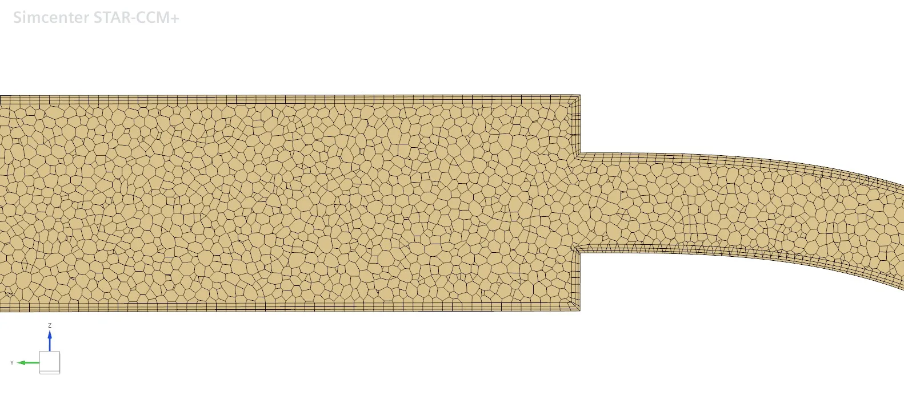
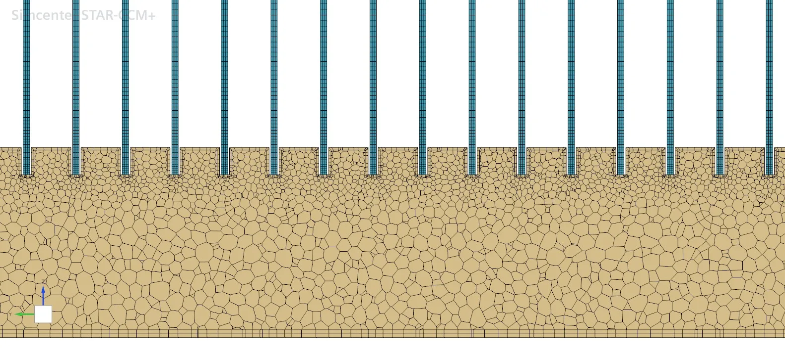
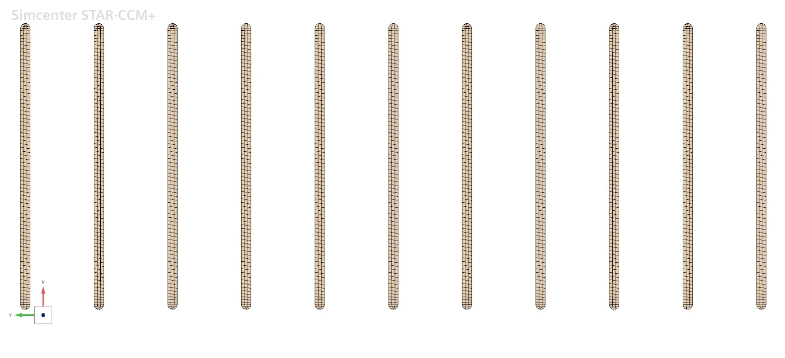

Objective
Determine a mesh resolution that predicts the pressure losses in a race car radiator and test circuit while keeping numerical uncertainty and computational cost acceptable.
Geometry preparation
The model was cleaned, leaving only the internal flow domain, and split into different PIDs to control the mesh based on the geometry.
Mesh types and region application
Refinement groups (base size 2 mm):
| Component | Category | Details | Min size (mm) | Target size (%) |
|---|---|---|---|---|
| Radiator and tubes | Group 1 | Radiator trays | 1 | 100 |
| Group 2 | Tubes | 1 | 100 | |
| Group 3 | Interfaces | 0.5 | 20 |
A direct mesher approach was used for the channels:
| Category | Details | Start/end size (hyperbolic) | Number of cells |
|---|---|---|---|
| Direct mesh | Channels | 0.4 mm | 200 |
Prism layer settings:
| Details | Layers | First layer (mm) | Total thickness (mm) |
|---|---|---|---|
| Tubes | 3 | 0.5 | 2.07 |
| Radiator trays | 3 | 0.75 | 2.63 |
Mesh



A high y+ approach (30–100) was used throughout the model. The channels were modelled with a structured quad mesh using a direct mesher and a hyperbolic distribution, keeping a higher mesh density near the trays where the flow was expected to be more sensitive due to expansion and redistribution.
The trays and tubes were meshed with a polyhedral approach due to the complex, non axis-aligned flow.
Mesh independence and validation
A mesh independence study was run with three main mesh levels: coarse, medium and fine. A mid-fine mesh was then added to capture the plateau region of the curve. A refinement ratio between 1.23 and 1.26 was used, rather than the recommended r > 1.3, to preserve the prism-to-core mesh transition.
The prism layer distribution was kept constant across all meshes to preserve a consistent y+.
| Cells (M) | Δp circuit (Pa) | Δp radiator (Pa) | h (mm) | r | |
|---|---|---|---|---|---|
| Coarse | 1.875 | 103,249.60 | 57,942.90 | 1.66 | |
| Mid | 3.570 | 97,078.64 | 52,910.81 | 1.34 | 1.239 |
| Mid-fine | 5.325 | 95,600.34 | 50,409.09 | ||
| Fine | 7.170 | 95,602.79 | 50,186.82 | 1.06 | 1.262 |
The convergence ratio (CR) and grid convergence index (GCI) were then calculated with a MATLAB script following the formulas from the literature.
| Value | CR | GCI |
|---|---|---|
| Circuit pressure delta | 0.239 | 0.5 – 0.58% |
| Radiator pressure delta | 0.542 | 6.34 – 7.12% |
CR was between 0 and 1, showing monotonic convergence for both the radiator and the circuit.
The study shows convergence of both pressure drops, as seen in the asymptotic behaviour of the mid-fine and fine meshes. The GCI values, computed from 3 mesh levels, were 0.5% and 0.58% for the circuit and 6.34% and 7.12% for the radiator. This shows very low numerical uncertainty for the circuit and a higher, but still moderate, sensitivity to mesh refinement for the radiator.
Comparison with experimental data
| Circuit | Radiator | |
|---|---|---|
| Mid-fine mesh Δp (Pa) | 95,600.34 | 50,409.09 |
| Experimental Δp (Pa) | 91,906.20 | 55,392.27 |
| Difference | 3.86% | −9.89% |
The mid-fine mesh predicts the circuit pressure drop with acceptable accuracy (3.86% error). The radiator pressure drop, however, is underpredicted by 9.89%. Further investigation is needed to separate discretisation effects from uncertainties in the experimental setup and boundary conditions.
Conclusion
Based on the mesh convergence and experimental comparison, the mid-fine mesh was selected as the best balance between numerical accuracy and computational cost, and will be used for future analysis.